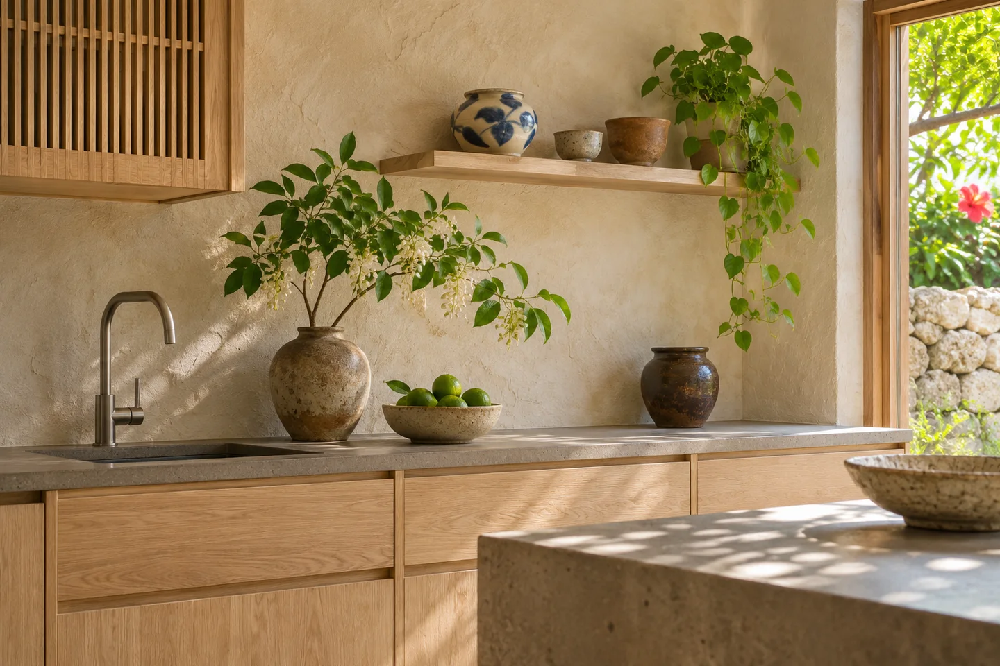

Works
変わったところを、
写真と一緒に。
施工前後の景色を見比べながら、住まいの整え方を紹介します。

Living room / concept project
光が入り、家族が集まるLDKへ。
暗さと閉塞感が気になっていた部屋を想定し、色・収納・部屋のつながりを見直したデザインサンプルです。

天井や床の印象を軽くし、窓の光が部屋の奥まで届くように整えます。収納は隠す場所を決めて、生活道具をしまいやすく。部屋の中と庭がゆるやかにつながる住まいを考えました。
掲載している住宅・工事内容は架空の制作サンプルです。実在のお客様・施工実績ではありません。


What changed
写真で見せるだけでなく、
設計の意図も伝える。
改修後の写真だけを並べず、「どんな悩みを、どんな考えで整えたか」を短い文章で紹介。検討中の方が、自分の住まいに置き換えて想像できる事例ページにしています。
サービスを見る